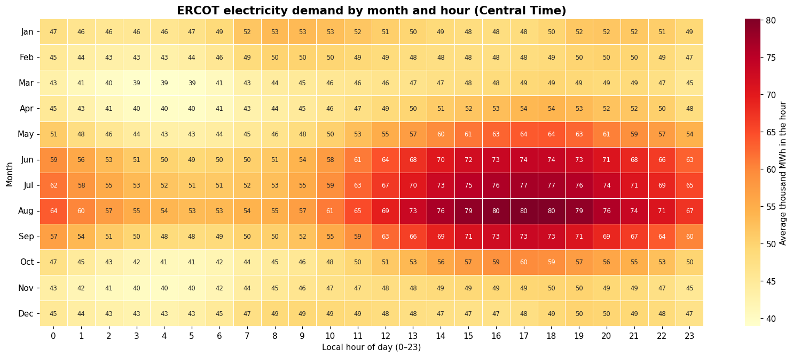
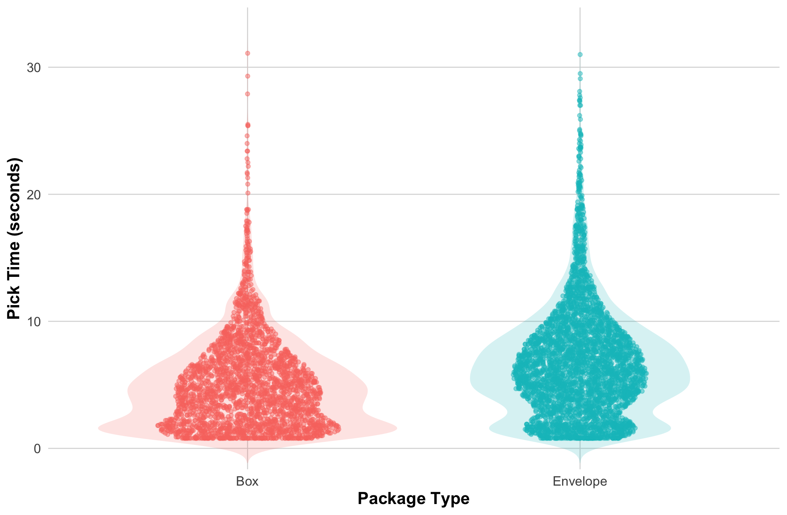
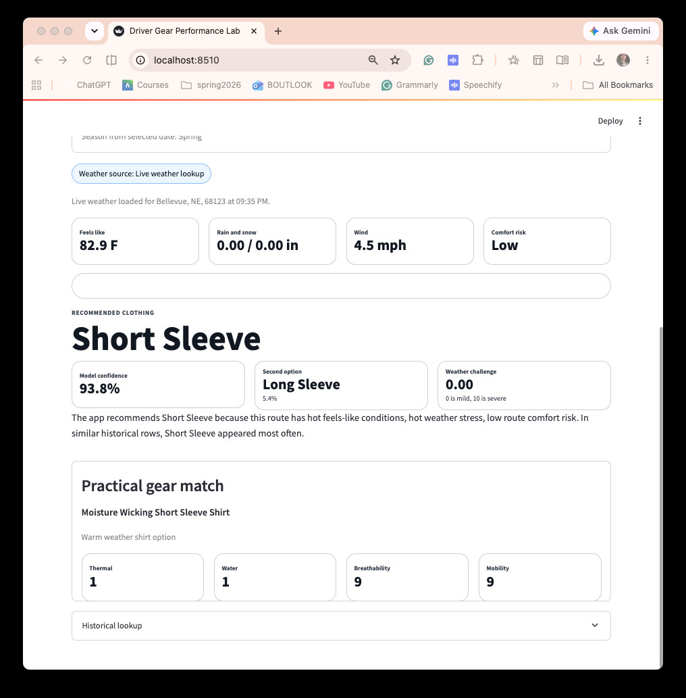

Bellevue University & independent learning
School projects.
Data questions, predictive models, and practical visualizations created through university coursework and experience.
Includes three entries from Bellevue University’s DSC 450 Fall Capstone course.

Predicting Economic Damage from Severe Weather
We tested whether recorded storm characteristics can predict any documented economic damage, rather than confusing frequent storms with costly ones.

Forecasting Regional Electricity Demand
I built a visual evaluation of hourly Texas electricity demand and forecast error, comparing team models with ERCOT’s published benchmark.
DSC 450 — Project 3
Reserved for the third project in Bellevue University’s DSC 450 Fall Capstone course. Topic, methods, and results will be added when confirmed.

Amazon Package Pick-Time Efficiency
I measured package search times during my own delivery work and visualized how package type, bag density, and familiarity affected the workflow.

Driver Gear Performance Lab
I deployed a tuned Random Forest in Streamlit to recommend a driver shirt category from route and weather conditions, with a transparent explanation of the prediction.
THE COMPLETE COLLECTION